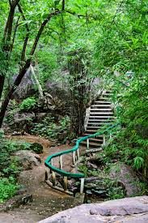
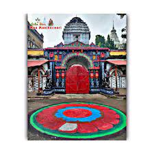
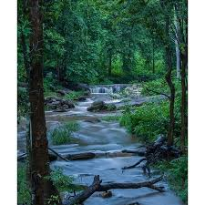

Kalahandi is one of the famous historical and ancient places of India or Odisha; where Dokarichanchara is a picnic or tourist place located in the village Kokasara, on the border of Kalahandi and Nabarangpur district. It is completely different and unique place than that of other attractive tourist centers in Kalahandi. Dokarichanchara is famous due to its two famous waterfalls, Dokaridara and Bhanyaraghumara (or Bhairav dhar). In addition, the historical Gudahandi cave nearby it makes this place more prominent. The Gudahandi cave was named due to its appearance as a jaggery (guda) pot (handi). There you can see several pre-historical literatures, pictographic inscriptions and drawings crafted on the stone walls. There is famous Ram temple, which is famous due to very old and ancient. Every year on Sri Ram Navami a nine-day long festive occurs. Dokarichanchara Falls The Dokaridhara falls from a height of 200ft, which is surrounded by beautiful stoned hills. Maa Dokari Devi is also been worshiping at this place since a long time. If we walk on next to the stream, after 2km distance we can reach at the famous Bhanyaraghumara waterfalls, which falls from a height of 150ft height. You can see the beautiful hill stations Yogi Pahad and Rani Pahad nearby it.Nearest Railway Station :Junagarh
Fifteen Kilometers from Bhawanipatna, Phurlijharan is a perennial water fall about 30 Ft in height and has a special charm of its own. Themulti coloured rainbow created by the sunrays falling on the scattered water particles of the fall is an amusing sight to be seen. The evergreen forests around the fall provide ample opportunities to group picnickers.Nearest Railway Station :Bhawanipatna
The deity of Chakrakotamandala comprising present days Kalahandi, Koraput and Bastar was Manikya debi or Manikeswari around 10th century A.D. Later on Kalahandi king Harichandra Deo struggled and died because of which his pregnant queen left for her father’s house in Gadapur, Phulbani. Some part of Phulbani was part of Mahakantara in ancient time and Chakrakota Mandala. Though capital of Chakrakotamandala is still being debated, it is clear that it has many similar with Kamala Mandala, another ancient name of Kalahandi, Manikya Devi came to Gadapur perhaps due to influence of Chakrakota Mandala. Later, the queen and her son, Ramchandra Deo returned with Manikya Debi or Manikeswari as per Kalahandi’s public request that time. Manikeswari was brought from Gadapur (Phulbani) around 1200 A.D. and it was located in Kalahandi.
Rabandarh is a place of great scenic beauty lying about 12.8 K.Ms from Bhawanipatna and approachable by a dusty road. It is named after a small water fall inside a mountain gorge. The panorama around provides some delightful consrasts of scenery, in mountains and over looking dales, in bore rocks and thick forests and in the eternal calmness of the surroundings broken by the music of the fall. Despite bad communications picnic parties some times visit the place from Bhawanipatna as there is no market nearby. The stream which creats the fall almost dries up during the hot season. Down stream, a Minor Irrigation Project utilizes its water for agriculture purposes.